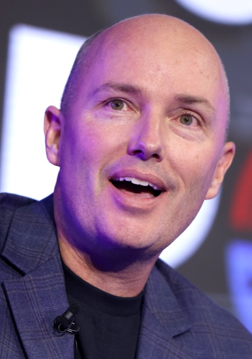

Spencer J. Cox
Governor of Utah · 6th-generation alfalfa farmer
Spencer Cox personally farms about 130 acres of alfalfa on his family's multi-generational operation in Fairview, Sanpete County. He has acknowledged this on camera, telling KUTV: "We farm mostly alfalfa, some hay, some barley. But mostly alfalfa for the local ranchers."
In July 2021, while asking Utahns to take shorter showers and rip out lawns, Cox called the idea of cutting water to farms "ignorant." The Salt Lake Tribune ran the headline "Cox says it's 'ignorant' to believe cutting water to farms is the answer to the drought , The governor pleads with Utahns to water lawns less so farmers can grow more."
In March 2023, after scientists warned the lake had a 5-year window before ecological collapse, Cox publicly told researchers to ease up on the "doom and gloom," adding: "If the Great Salt Lake is already done, if it's already dried up, we're all going to die from toxic dust, then I'm just going to go ahead and water my lawn."
In the same period he asked Utahns of all faiths to formally pray for rain.
On a 2024 study finding the lake needs a 61% reduction in alfalfa production to stabilize, Cox's administration declined to commit to the recommendations.
To pre-empt the inevitable rebuttal: Cox's farm is in the Sevier River basin, not the Great Salt Lake watershed, so his specific water doesn't literally drain the lake. Fine. He is still the most powerful elected defender of Utah's alfalfa industry, he has called critics "ignorant" on camera, and he has flatly resisted the one policy lever (acreage reduction) that the peer-reviewed science says would save the lake. The watershed-boundary technicality changes nothing about that.